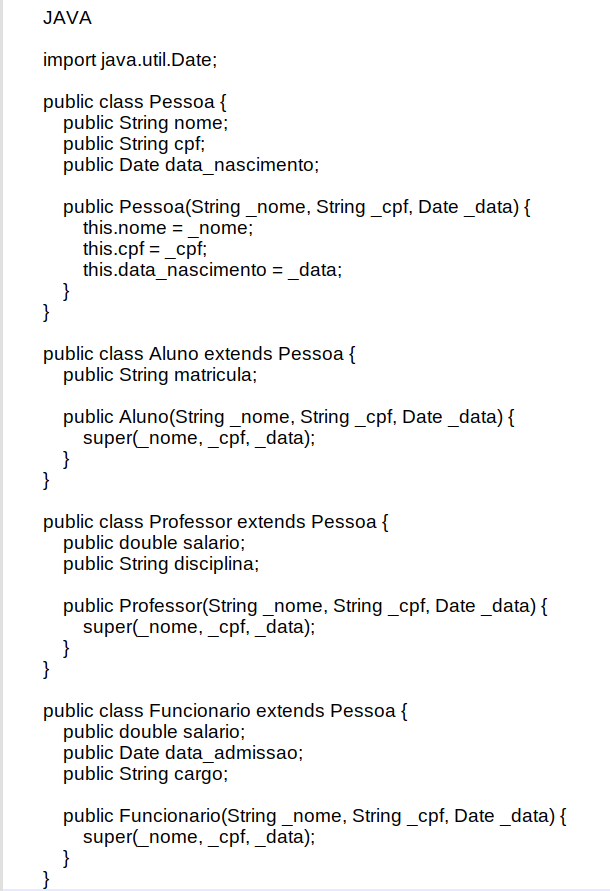
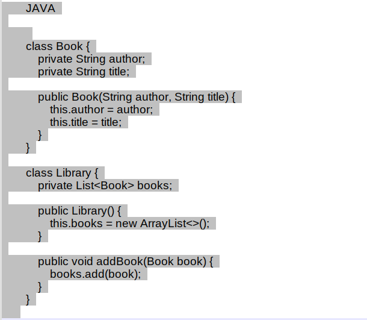
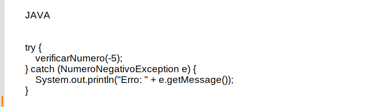

Boas Práticas com codificação em linguagem Java.
Boas Práticas de Desenvolvimento em Java

Desenvolvedor Java Sênior na Develcode
28 de julho de 2024
1. Introdução:
Se você é um desenvolvedor Java em busca de melhores práticas e padrões para escrever código limpo, eficiente e sustentável, este artigo é para você. Aqui, exploraremos os princípios fundamentais que podem elevar a qualidade do seu código e tornar sua jornada de desenvolvimento mais produtiva.
O que você encontrará neste artigo:
- Herança, Polimorfismo e Composição: Entenda como esses conceitos orientados a objetos podem melhorar a estrutura do seu código e facilitar a manutenção.
- Documentação e Comentários: Descubra como escrever comentários claros e concisos para tornar seu código mais legível e colaborativo.
- Refatoração Contínua: Aprenda por que revisar e melhorar constantemente seu código é essencial para evitar dívidas técnicas e manter a qualidade.
- Tratamento de Erros: Explore boas práticas para lidar com exceções e erros de forma robusta e eficaz.
- Testabilidade e Injeção de Dependência: Descubra como escrever código que seja fácil de testar e flexível para futuras mudanças.
Vamos mergulhar nesses conceitos e aprimorar suas habilidades como desenvolvedor Java!
2. Legibilidade do Código:
Escrever código legível e compreensível é fundamental para a manutenção, colaboração e escalabilidade de projetos. Quando utilizamos nomes significativos para variáveis e métodos, facilitamos a compreensão do fluxo do programa e reduzimos a chance de erros. Além disso, um código claro permite que outros desenvolvedores se integrem mais rapidamente ao projeto e contribuam de forma eficiente.
Vamos ver alguns exemplos de nomes significativos para variáveis e métodos em código Java:
- Variáveis:
- quantidadeDeAlunos: em vez de qtd para representar o número de alunos.
- nomeCompleto: em vez de n para armazenar o nome completo de uma pessoa.
- Métodos:
- calcularMedia: em vez de calc para calcular a média de notas.
- buscarUsuarioPorId: em vez de getUser para obter um usuário pelo ID.
Os nomes significativos devem ser descritivos e refletir o propósito da variável ou método. Isso torna o código mais legível e facilita a manutenção.
3. Manutenibilidade:
Escrever código que seja fácil de manter e atualizar envolve algumas práticas essenciais. Primeiro, divida seu código em componentes menores e modulares, cada um com uma única responsabilidade. Isso aumenta a legibilidade e a reutilização. Além disso, mantenha uma indentação e espaçamento consistentes para facilitar a leitura. Com essas abordagens, você terá um código organizado e escalável.
Melhorar a legibilidade do código é essencial para facilitar a manutenção e colaboração. Vamos ver mais algumas dicas:
- Nomes Significativos:
- Escolha nomes descritivos para variáveis, métodos e classes. Evite abreviações ou siglas.
- Prefira quantidadeDeAlunos em vez de qtd e calcularMedia em vez de calc.
- Comentários Claros:
- Adicione comentários explicativos para partes complexas do código.
- Descreva o propósito de funções e blocos de código.
- Formatação Consistente:
- Mantenha uma indentação uniforme.
- Use espaços consistentemente (por exemplo, após vírgulas e operadores).
- Evite Duplicação:
- Não repita trechos de código. Crie funções reutilizáveis.
- Utilize constantes para valores fixos.
- Separe Responsabilidades:
- Divida seu código em módulos com funções específicas.
- Siga o princípio da responsabilidade única.
Saibam que a legibilidade é subjetiva, mas seguir essas práticas ajuda a tornar seu código mais claro e compreensível.
4. Reutilização de Código:
A reutilização de código é fundamental no desenvolvimento Java. Ao criar componentes reutilizáveis, você evita duplicações, melhora a organização e facilita a manutenção. Essa prática permite que partes do código sejam compartilhadas entre projetos ou dentro do mesmo projeto, economizando tempo e esforço. Além disso, componentes bem projetados promovem escalabilidade e consistência no sistema.
A reutilização de código é fundamental no desenvolvimento Java. Aqui estão alguns exemplos práticos:
- Herança: A herança permite que uma classe filha herde membros (atributos e métodos) da classe pai. Por exemplo, uma classe Cachorro pode herdar da classe Animal, obtendo acesso aos métodos definidos na classe pai.
Vamos considerar um exemplo de herança em Java. Suponhamos que temos uma superclasse chamada Pessoa, e três subclasses: Aluno, Funcionario e Professor. A classe Pessoa possui atributos como nome, CPF e data de nascimento. As subclasses herdam esses atributos da superclasse e podem adicionar características específicas. Veja como implementar essas classes:

Exemplo de código Java aplicando a herança de classes.
Nesse exemplo, a classe Pessoa é a superclasse, e as subclasses Aluno, Funcionario e Professor herdam seus atributos e métodos. Assim, podemos criar uma hierarquia de classes, tornando o código mais organizado e reutilizável.
- Composição: A composição envolve criar objetos complexos combinando outros objetos mais simples. Por exemplo, uma classe Carro pode conter objetos de outras classes, como Motor, Rodas e Transmissão.
A composição em Java é o ato de passar um objeto para outro, permitindo que eles se comuniquem e troquem informações. Imagine uma biblioteca que contém livros. Nesse exemplo, criamos uma classe Book com atributos como autor e título. Em seguida, criamos uma classe Library que tem uma referência para a lista de livros. A biblioteca usa a composição para reutilizar dados, sem duplicação de código.
Aqui está um exemplo simplificado:

Exemplo de código Java aplicando a composição de classes.
Nesse caso, a classe Library compõe-se de objetos da classe Book, permitindo que a biblioteca gerencie sua lista de livros.
- Interfaces: Interfaces* [vide rodapé] definem contratos que as classes devem seguir. Elas permitem que diferentes classes implementem o mesmo conjunto de métodos. Por exemplo, várias classes podem implementar a interface Serializable* [vide rodapé] para suportar serialização.
As interfaces em Java são semelhantes a classes, mas com uma diferença importante: elas contêm apenas assinaturas de métodos, campos e métodos padrão. Desde o Java 8, você também pode criar métodos padrão em interfaces.
Vejamos um exemplo:
Exemplo de código Java aplicando a implementação de interfaces.
Neste exemplo, criamos a interface ReprodutorMusical com um método reproduzir. A classe Smartphone implementa essa interface e fornece uma implementação para o método reproduzir. Observe que chamamos o método estático comercial diretamente da interface, não da classe que a implementa.
- Bibliotecas e Frameworks: Reutilização de bibliotecas e frameworks* [vide rodapé] existentes. Por exemplo, use a biblioteca Apache Commons para operações comuns, como manipulação de strings e coleções.
A biblioteca Apache Commons é um projeto da Apache Software Foundation que oferece componentes Java reutilizáveis para diversas finalidades.
Vamos mostrar um exemplo de como usar o Apache Commons Lang, uma parte dessa biblioteca, para manipulação de strings:
Para a instalação da dependência no código Java:
Adicione a dependência do Apache Commons Lang ao seu projeto (por meio do Maven, Gradle ou manualmente). Para incluir a biblioteca Apache Commons Lang em um projeto Java usando o Maven, siga estas etapas:
Vamos ver como incluir a dependência em Maven no arquivo pom.xml do seu projeto (geralmente localizado na raiz do projeto). Dentro da seção <dependencies>, adicione a seguinte dependência para o Apache Commons Lang:
Dependência Maven para a biblioteca Java Apache Commons Lang.
O Maven baixará automaticamente a biblioteca Apache Commons Lang e a incluirá em seu projeto. Certifique-se de que o Maven esteja configurado corretamente e que você tenha acesso à internet para que ele possa buscar as dependências.
Exemplo de Uso:
Exemplo do código Java utilizando bibliotecas existentes.
Neste exemplo, usamos métodos do Apache Commons Lang para verificar se uma string está vazia, capitalizar a primeira letra e remover espaços em branco. A biblioteca do Apache Commons, como Collections, para reutilizar componentes úteis em seu projeto Java.
A reutilização de código promove eficiência e organização, tornando o desenvolvimento mais ágil e mantendo a qualidade do software.
5. Testabilidade:
A injeção de dependência é um padrão de projeto que reduz o acoplamento entre classes, tornando o código mais flexível e testável. Em vez de depender diretamente de classes concretas, as classes utilizam abstrações (interfaces) para suas dependências. Isso permite substituir facilmente implementações durante os testes e promove organização e modularidade. No Java, frameworks como o Spring facilitam a configuração e gerenciamento das dependências. Além disso, a injeção de dependência ajuda a realizar testes unitários, substituindo dependências por objetos de teste.
Para aplicar injeção de dependência em um projeto Java, você pode seguir estas etapas:
- Defina suas interfaces: Comece criando interfaces para as classes que precisam de dependências. Por exemplo, se você tem uma classe ServicoEmail, crie uma interface EmailService que defina os métodos necessários.
- Implemente as classes concretas: Agora, crie as implementações concretas das interfaces. Por exemplo, crie uma classe EmailServiceImpl que implementa EmailService.
- Configure o contêiner de injeção de dependência: Use um framework de injeção de dependência, como o Spring, para configurar as dependências. No Spring, você pode usar anotações como @Autowired para injetar automaticamente as dependências nas classes.
- Anote suas classes com as dependências: Nas classes que precisam de dependências, adicione anotações para indicar quais objetos devem ser injetados. Por exemplo:
- Teste suas classes: Agora você pode facilmente substituir as implementações de dependência por mocks durante os testes. Isso torna seus testes mais isolados e confiáveis.
A injeção de dependência ajuda a manter seu código organizado, flexível e fácil de testar.
6. Encapsulamento:
O encapsulamento é um princípio fundamental na programação orientada a objetos. Ele envolve esconder os detalhes internos de uma classe e expor apenas uma interface pública bem definida. Isso oferece vários benefícios:
- Abstração de complexidade: Ao ocultar os detalhes de implementação, você permite que outros desenvolvedores usem sua classe sem se preocupar com os detalhes internos. Isso simplifica o uso e promove a reutilização.
- Manutenção e evolução: Se você precisar alterar a implementação interna da classe (por exemplo, otimizar ou corrigir bugs), a interface pública permanece a mesma. Isso evita impactos em outros componentes que dependem dela.
- Segurança e validação: Você pode aplicar validações e restrições na interface pública para garantir que os dados sejam usados corretamente. Isso ajuda a evitar erros e comportamentos inesperados.
- Flexibilidade: Ao expor apenas o necessário, você permite que outras classes interajam com sua classe de maneira flexível, sem depender de detalhes específicos.
O encapsulamento é essencial para criar código modular, seguro e fácil de manter.
Para aplicar encapsulamento em Java, siga estas práticas:
- Atributos privados: Declare seus atributos como private para restringir o acesso direto a eles. Isso evita que outros componentes modifiquem o estado interno da classe diretamente.
- Métodos públicos: Exponha apenas os métodos essenciais como public. Esses métodos devem fornecer uma interface clara para interagir com os atributos da classe. Por exemplo:
Exemplo de encapsulamento de comportamento de uma classe em Java.
- Construtores controlados: Use construtores para inicializar os atributos e definir seu estado inicial. Isso ajuda a garantir que a classe esteja em um estado válido desde o início.
- Métodos privados e protegidos: Crie métodos privados ou protegidos para implementar a lógica interna da classe. Isso mantém os detalhes de implementação ocultos.
- Interfaces públicas claras: Documente adequadamente os métodos públicos para que outros desenvolvedores saibam como usá-los corretamente.
O encapsulamento promove a segurança, modularidade e manutenção do código.
7. Coesão e Acoplamento:
Vamos falar sobre coesão e acoplamento em Java. Esses conceitos são fundamentais para criar um código robusto e de fácil manutenção.
- Coesão: Refere-se ao grau com o qual um módulo (classe, método, componente) possui uma responsabilidade única e bem definida. Códigos coesos têm membros intimamente ligados, trabalhando juntos para um objetivo comum. Manter classes coesas significa evitar funcionalidades supérfluas e garantir que cada classe tenha uma única tarefa relevante. Isso simplifica a manutenção e reduz efeitos colaterais.
- Acoplamento: Mede o quanto um módulo depende de outros módulos. Módulos altamente acoplados são fortemente dependentes uns dos outros. Reduzir o acoplamento é essencial para criar sistemas flexíveis e compreensíveis. Classes com baixo acoplamento são mais fáceis de modificar sem afetar outras partes do código.
Portanto, ao projetar suas classes em Java, busque alta coesão (responsabilidades claras) e baixo acoplamento (dependências mínimas). Isso torna o código mais modular, fácil de entender e manter.
8. Tratamento de Erros:
O tratamento de erros em Java é crucial para criar código robusto e legível. Aqui estão algumas boas práticas:
- Use exceções apropriadamente: Capture exceções apenas quando você pode lidar com elas de maneira útil. Evite capturar exceções genéricas como Exception ou Throwable, pois isso pode mascarar bugs e dificultar a depuração.
- Trate erros específicos: Identifique exceções específicas que podem ocorrer (por exemplo, NullPointerException, IOException) e trate cada uma delas separadamente. Isso torna o código mais claro e facilita a manutenção.
- Não ignore exceções: Evite usar blocos try-catch vazios ou simplesmente imprimir mensagens de erro. Sempre tome alguma ação apropriada, como registrar logs ou notificar o usuário.
- Use try-with-resources: Para recursos que precisam ser fechados (como arquivos ou conexões de banco de dados), utilize o bloco try-with-resources para garantir o fechamento automático e evitar vazamentos.
Um tratamento de erros bem pensado melhora a qualidade do código e facilita a manutenção.
Vamos criar e lançar uma exceção personalizada em Java, siga estas etapas:
- Criando uma exceção personalizada:
- Dentro de uma classe que herde de Exception (ou RuntimeException para exceções não verificadas).
- Adicione construtores para definir mensagens de erro e, se necessário, encadear exceções.
Por exemplo:
Exemplo de uma classe para criação de um exceção específica.
Lance a exceção e dentro do código, use a palavra-chave throw para lançar sua exceção personalizada.
Por exemplo:
Exemplo de código Java para lançamento de uma exceção de erro específica.
Trate a exceção e em outro lugar do código, onde você chama o método verificarNumero, use um bloco try-catch para tratar a exceção.
Por exemplo:

Exemplo de código Java para captura de uma exceção de erro.
Ao criar exceções personalizadas ajuda a identificar e tratar erros específicos em seu código.
Exemplo completo:
Exemplo completo de um código Java com tratamento de erro.
Nesta classe o método NumeroNegativoException é a exceção personalizada, e o método verificarNumero verifica se um número é negativo e lança a exceção personalizada se necessário. E no método main, estamos testando a exceção e tratando-a com um bloco try-catch.
9. Documentação e Comentários:
A documentação de código é a espinha dorsal que sustenta a manutenção, escalabilidade e colaboração eficaz em projetos Java. Comentários bem elaborados são essenciais para descrever o propósito, a lógica por trás do código e sua funcionalidade. Eles devem ser escritos de maneira clara, concisa e sem ambiguidades, utilizando uma linguagem simples e direta para facilitar a compreensão tanto para membros atuais da equipe quanto para futuros desenvolvedores. Além disso, documentar funções e métodos, padronizar o estilo, usar exemplos significativos e manter a documentação atualizada são práticas essenciais para garantir que o código permaneça robusto e fácil de entender.
10. Refatoração Contínua:
A refatoração contínua é uma prática essencial para manter a qualidade e a performance do código em projetos Java. Ela envolve a revisão constante do código existente, com o objetivo de aprimorar sua estrutura, legibilidade e eficiência. Ao refatorar regularmente, evitamos a acumulação de dívida técnica, reduzimos a complexidade e facilitamos a manutenção. Além disso, a refatoração permite que o código se adapte às mudanças contínuas nos requisitos e no ambiente, garantindo um software mais robusto e sustentável a longo prazo.
11. Princípios de Design Orientado a Objetos:
Vamos resumir os princípios de design orientado a objetos de forma concisa:
- Herança: A herança permite que uma classe herde características e comportamentos de outra classe. É útil quando várias classes compartilham funcionalidades semelhantes. No entanto, use-a com moderação para evitar hierarquias complexas e rígidas.
- Polimorfismo: O polimorfismo permite que objetos de diferentes classes sejam tratados de maneira uniforme. Isso é alcançado por meio de interfaces, classes abstratas e sobrescrita de métodos. Use-o para criar código flexível e extensível.
- Composição: A composição envolve criar classes complexas combinando outras classes menores (componentes). Em vez de herdar tudo, você compõe objetos com base em suas necessidades específicas. Isso promove reutilização e modularidade.
Saiba como aplicar esses princípios de forma equilibrada, mantendo o código legível, flexível e fácil de manter.
12. Conclusão
Neste artigo, exploramos conceitos essenciais para desenvolvedores Java que desejam elevar a qualidade do código e adotar boas práticas. Lembre-se de aplicar herança, polimorfismo e composição de forma equilibrada, documentar seu código de maneira clara e concisa, refatorar continuamente para evitar dívidas técnicas e tratar erros de forma robusta. Testabilidade e injeção de dependência também são fundamentais para criar sistemas flexíveis e sustentáveis.
À medida que você avança em sua jornada de desenvolvimento, lembre-se de que a busca constante por conhecimento e a aplicação diligente desses princípios farão de você um desenvolvedor mais habilidoso e confiante.
Continue "codando" com paixão e curiosidade, e bons conceitos sempre estarão ao seu lado!
Até a próxima!
Notas:
- Frameworks em Java são estruturas pré-fabricadas de código que oferecem funcionalidades reutilizáveis para agilizar e padronizar o desenvolvimento de aplicações. Eles permitem que os desenvolvedores se concentrem na lógica de negócios específica da aplicação, em vez de reescrever código comum. Alguns exemplos populares incluem o Spring, que simplifica o desenvolvimento de aplicativos empresariais, e o Hibernate, que abstrai a persistência de dados.
- Uma interface, em linguagem Java, é semelhante a uma classe, mas com uma diferença importante: ela contém apenas assinaturas de métodos, campos e métodos padrão. Desde o Java 8, você também pode criar métodos padrão em interfaces. Uma classe que implementa uma interface deve fornecer implementações para todos os métodos declarados na interface. As interfaces são usadas para definir um padrão a ser seguido por classes em um determinado contexto, permitindo o polimorfismo e a reutilização de código.
- Implementar a interface Serializable, em linguagem Java, é um passo importante para permitir que objetos de uma classe sejam serializados e de serializados. A serialização envolve salvar o estado atual dos objetos em arquivos no formato binário, permitindo que esse estado seja recuperado posteriormente, recriando o objeto em memória exatamente como estava no momento da serialização. Para que um objeto possa ser serializado e de serializado, sua classe deve implementar a interface Serializable. Essa interface sinaliza à máquina virtual Java (JVM) que os objetos dessa classe estão aptos para a serialização. Caso você não deseje serializar um atributo específico de instância, basta marcá-lo como transient, e o objeto serializado não conterá informações referentes a esse atributo.